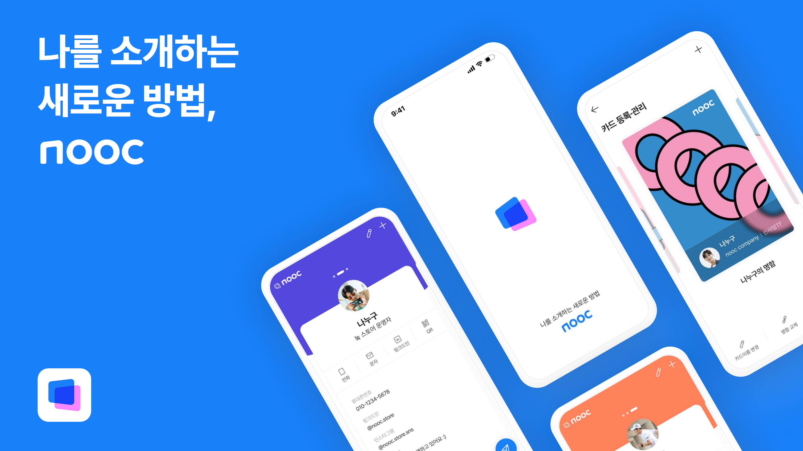
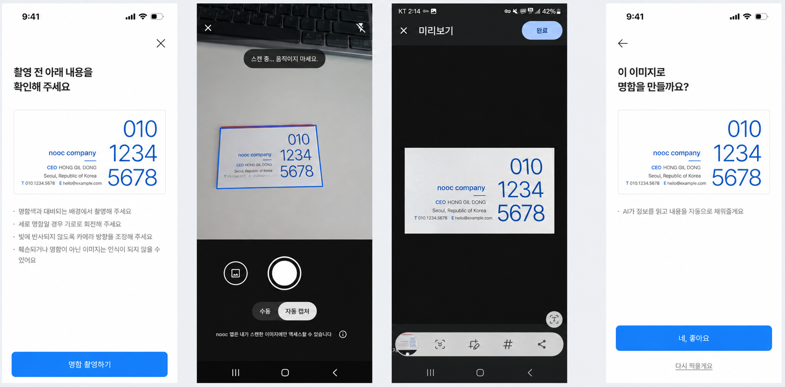
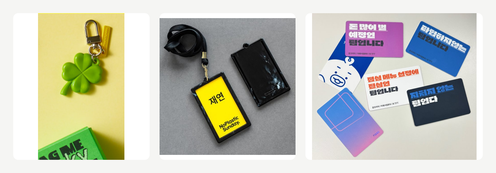

명함을 만드는 서비스에서, 꺼내 쓰는 서비스로
nooc는 잡코리아가 취업 준비생과 사회초년생과의 접점을 넓히기 위해 시작한 디지털 명함 프로젝트였습니다. 저와 팀은 회사에서 받은 명함이 없어도 자신의 활동과 관심사를 소개하고, 새로운 만남을 관계로 이어갈 수 있는 제품을 만들고자 했습니다.
PO이자 TF 리드로서 이 방향을 실제 사용 흐름과 출시 범위로 구체화했습니다. 정해진 일정 안에 명함 생성부터 공유와 저장까지 이어지는 앱을 출시한 뒤, 사용자 의견과 이용 데이터를 대조하며 무엇을 개선하고 어디에 더 투자할지 판단했습니다.
누가, 어떤 자리에서 이 명함을 꺼내 쓸까요?
채용 서비스는 주로 일자리를 찾는 시점에 이용합니다. nooc는 그보다 앞선 시기부터 사용자가 자신의 일을 소개하고 관계를 만들어 가는 접점을 확보하려는 시도였습니다. 이 사업 방향을 제품으로 옮기려면, 취업 준비생과 사회초년생이 굳이 디지털 명함을 만들어 쓸 장면부터 구체화해야 했습니다.
저와 팀이 주목한 것은 취업 스터디와 동아리, 사이드 프로젝트처럼 회사의 직함보다 개인의 관심사와 역할을 소개하는 만남이었습니다. 이름과 연락처만 전달하는 대신 자신이 하는 일과 포트폴리오, SNS를 한 장에 담고, 상대와의 관계에 맞게 보여줄 수 있도록 제품 목표를 정했습니다.
여기에는 두 가지 가설이 있었습니다. 멀티명함은 활동마다 다른 모습을 소개하려는 수요가 있을 것이라는 가설이었습니다. NFC 명함은 휴대폰에 태그하는 간단한 행동이 오프라인 만남에서 디지털 명함의 공유로 이어질 것이라는 가설이었습니다. 먼저 이 경험을 사용할 수 있는 제품을 출시하고, 실제로 명함을 만들고 주고받는지 확인하고자 했습니다.

제한된 일정에서, 무엇을 끝까지 완성할 것인가
출시의 우선순위는 개별 기능의 완성도보다 전체 사용 흐름의 안정성이었습니다. 디지털 명함을 만들고 NFC 명함에 연결한 뒤 QR, URL, NFC로 공유할 수 있어야 했습니다. 받은 명함은 저장되고 상대와의 연결로 이어져야 했습니다. 어느 한 단계가 막히면 명함을 주고받는 경험 자체가 성립하지 않았습니다.
종이 명함 인식은 직접 입력하는 수고를 줄여 주는 기본 기능이었지만, 여기에 많은 개발 자원을 투입할 수는 없었습니다. 개발팀과 구현 방식을 검토해 외부 라이브러리로 글자를 읽고(OCR), AI로 이름과 회사명, 연락처 등 항목을 분류하는 방식(NER)을 택했습니다. 자체 인식 기술을 고도화하는 대신 제품 전체를 완성하는 데 자원을 배분했습니다.
AI 명함 인식은 한국어와 영어로 작성된 명함을 대상으로 범위를 한정했습니다. 다른 언어에 대한 대응과 촬영 과정의 다소 어색한 UI, 매끄럽지 않은 화면 전환은 후속 개선으로 남겼습니다. 인식 오류가 있을 때는 사용자가 직접 수정하거나 서비스 운영팀에 확인을 요청할 수 있는 흐름을 마련했습니다. 이 과정을 거쳐 명함 등록을 마치고, 이후 공유와 저장까지 정상적으로 이어지는지를 출시 기준으로 삼았습니다.
해야 할 일과 미룰 일을 분명히 한 결과, 목표한 일정 안에 iOS와 Android 앱을 출시할 수 있었습니다.

좋다는 평가와 실제 사용은 달랐습니다
출시 직후에는 타깃에 맞는 사용자를 선별해 체험단을 운영하고 서비스에 대한 의견을 받았습니다. 이후 실제 이용 데이터를 함께 보니, 긍정적으로 평가한 기능이 모두 사용으로 이어지지는 않았습니다.
멀티명함은 활동이나 관계에 따라 자신을 다르게 소개할 수 있다는 점에서 좋은 평가를 받았습니다. 그러나 실제로 여러 명함을 만들어 쓰는 사용자는 많지 않았습니다. 여러 모습을 표현하고 싶다는 반응만으로는, 정보를 추가로 입력하고 명함을 나눠 관리할 만큼의 사용 동기가 있다고 판단할 수 없었습니다. 멀티명함의 반복 사용 가설은 기대에 미치지 못했습니다.
NFC 명함은 반응과 사용 양상이 함께 긍정적이었습니다. 태그로 명함을 전달하는 경험에 대한 평가가 좋았고, NFC 명함을 이용한 사용자는 앱 이용과 참여도 더 활발한 양상을 보였습니다. 실물 명함이 디지털 명함을 꺼내 쓰는 계기가 될 수 있다는 가설을 일부 확인한 셈입니다. 이 차이를 바탕으로 NFC를 활용한 공유 경험을 더 강화하기로 했습니다.
NFC를 더 자주 지니고, 자연스럽게 공유하도록
NFC 명함의 다음 과제는 만남의 자리에서 더 쉽게 꺼내 쓰게 하는 것이었습니다. 사용자가 평소 지니는 물건에 명함을 연결하면 공유할 기회도 늘어날 것이라고 봤습니다. 이에 키링 형태, 사원증과 명함을 결합한 형태, 자신의 취향을 표현하는 꾸미기 스티커 등으로 확장하는 방안을 기획했습니다.
이 아이디어들은 새 굿즈를 판매하는 데 목적을 두기보다, 명함을 지니고 다니다가 다른 사람에게 건네는 행동을 늘리기 위한 후속 안이었습니다. 이미 운영하던 NFC 명함의 제작과 판매 경험을 바탕으로 제품 개선 일정과 제작 및 마케팅 예산을 함께 계획했습니다.

첫 명함을 만들기 전, 입력부터 줄였습니다
초기 출시에서는 제한된 일정 안에 가입 기능을 완성하기 위해 휴대폰 번호의 점유 인증만으로 가입할 수 있도록 범위를 좁혔습니다. 이 방식으로 명함에 자동 입력되는 정보는 휴대폰 번호뿐이었고, 나머지는 사용자가 직접 작성해야 했습니다.
출시 후에는 소셜 가입을 우선 추가했습니다. 가입을 간편하게 하면서 첫 명함을 만드는 데 필요한 입력도 함께 줄일 수 있었기 때문입니다. 소셜 가입 시 이름과 프로필 사진, 이메일까지 자동으로 채워 사용자는 소속과 대표 SNS, 자기소개 등 자신을 설명하는 정보에 집중할 수 있도록 했습니다.
개선 후 가입한 당일 첫 명함을 만든 사용자의 비율이 40%에서 55%로 높아졌습니다. 가입 편의뿐 아니라 가입 과정에서 확보한 정보가 명함 작성으로 이어지게 하는 것이 첫 사용을 돕는다는 근거를 얻었습니다.
이 결과를 바탕으로 다른 정보도 직접 입력하는 부담을 줄일 수 있는지 검토했습니다. 링크드인 등 SNS의 프로필 정보를 가져오는 방식이 그중 하나였습니다. 정보를 더 많이 요구하기보다, 이미 작성해 둔 정보를 활용해 자신의 명함을 쉽게 완성하도록 하는 방향이었습니다.
완성한 명함을, 실제 만남에서 쓰게 하기까지
첫 명함을 만드는 과정을 줄인 다음에는 공유하고 싶은 명함을 만들고, 실제로 꺼내 쓰도록 유도하는 CRM을 기획했습니다. 사진과 소개 콘텐츠를 보강하는 명함 꾸미기로 자신을 더 풍부하게 표현하게 하고, 첫 공유와 NFC 연결로 이어지는 안내를 준비했습니다.
가입자를 늘리는 것만으로는 명함 서비스의 가치를 확인하기 어려웠습니다. 사용자가 명함을 완성하고 상대에게 전달하는 흐름에 맞춰 제품 개선과 마케팅의 실행 순서를 잡았습니다.
조직의 목표를 사용자의 반복 행동으로 바꾸는 일
nooc를 돌아보면, 신규 고객과의 접점을 확보하려는 조직의 과제는 명확했지만 사용자가 어떤 만남에서 기존 방식을 바꾸면서까지 우리 제품을 쓸지는 충분히 좁히지 못했습니다. 취업 준비생과 사회초년생이라는 타깃만으로는 제품을 반복해서 사용할 이유가 설명되지 않았습니다. 멀티명함에 대한 호감과 실제 사용의 차이가 이를 보여줬습니다.
반면 NFC 명함에서는 제품을 사용할 상황과 행동을 구체적으로 볼 수 있었습니다. 이후에는 누가 누구에게 어떤 자리에서 명함을 건네고, 받은 사람이 다시 공유하는지까지 확인하며 온오프라인에서의 확산 가설을 검증하고자 했습니다. 다만 2025년 6월 전담 팀 운영이 종료되면서 신규 개발과 개선 없이 서비스를 유지하는 운영 체제로 전환됐고, 후속 실험을 이어가지는 못했습니다. 이후 2026년 7월 공식적으로 사업을 종료했습니다.
이 경험은 신규 사업에서 출시 실행력과 수요 검증을 별개의 과제로 관리해야 한다는 판단 기준을 남겼습니다. 정해진 일정에 제품을 내는 것과 사용자의 반복적인 선택을 얻는 것은 다른 성과입니다. 조직의 성장 목표를 제품 기능으로 바로 옮기기보다, 사용자가 기존 방식을 바꿀 만한 구체적인 상황과 행동을 먼저 정하고 그 근거에 따라 다음 투자의 범위를 결정해야 한다는 점을 배웠습니다.